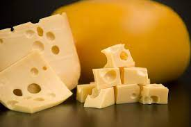
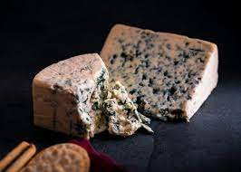
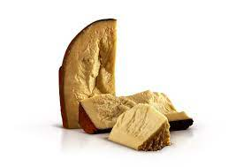
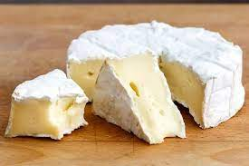

CON NOSOTROS VAS A CONOCER TOOOOODO SOBRE ESTE TREMENDO PRODUCTO, SUS ORÍGENES, SUS CLASES, SU HISTORIA Y HASTA LAS FORMAS DE PREPARARLO...DALE METETE A ESTE FASCINANTE MUNDO!!!
TIPOS DE QUESOS

Queso gruyere: se lo reconoce por su corteza muy olorosa, su textura pastosa y el ojo grande y brilloso.

Queso azul: de textura muy suave y un sabor y olor muy fuertes, con toques picantes y salados aportados por el hogo Penicillum.

Queso provolone: es un queso semiduro elaborado con leche de vaca o de búfala, de color claro y textura firme y fibrosa. Su sabor puede variar de leve a fuerte y picante según su tiempo de maduración.
